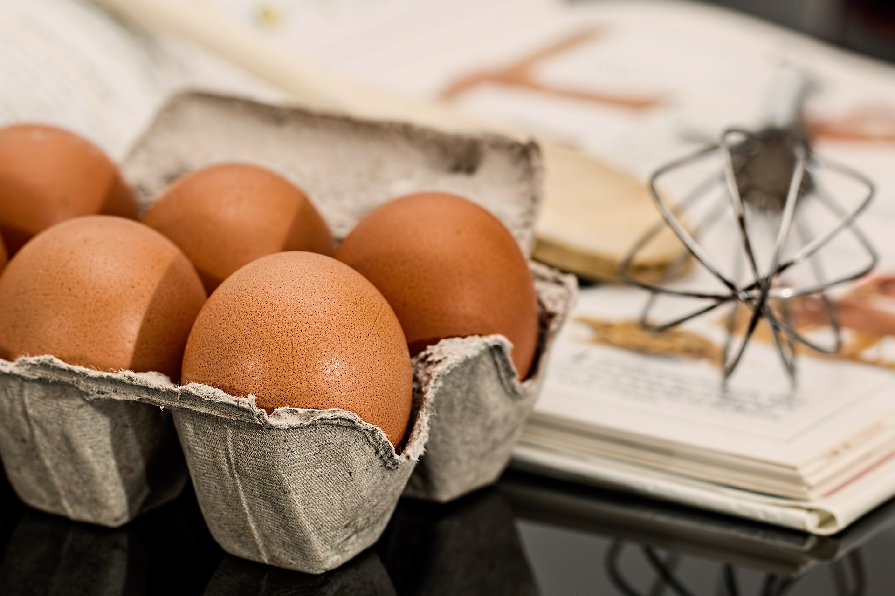
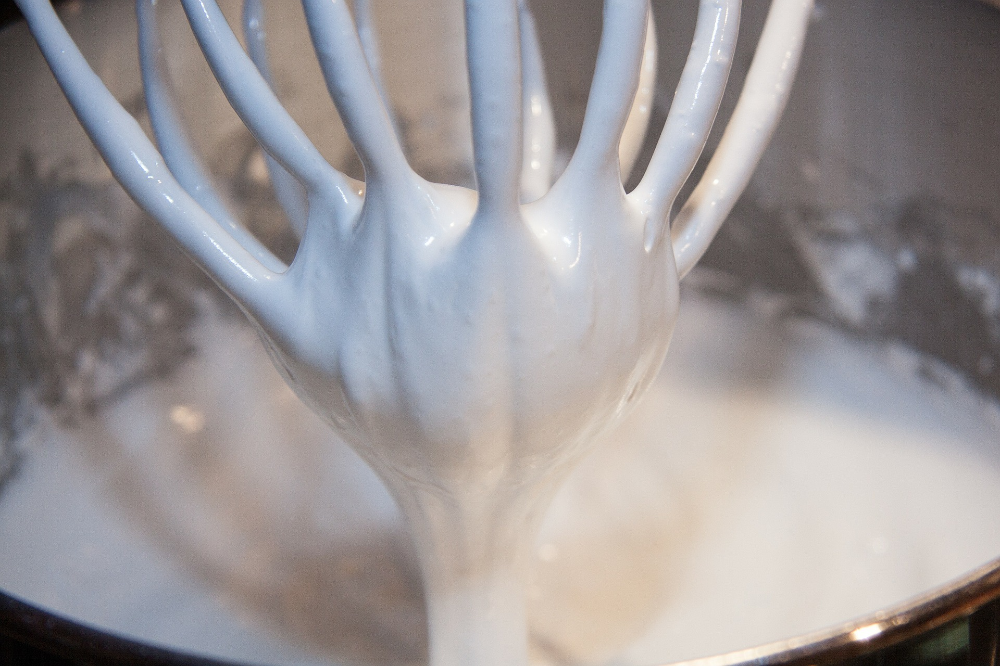
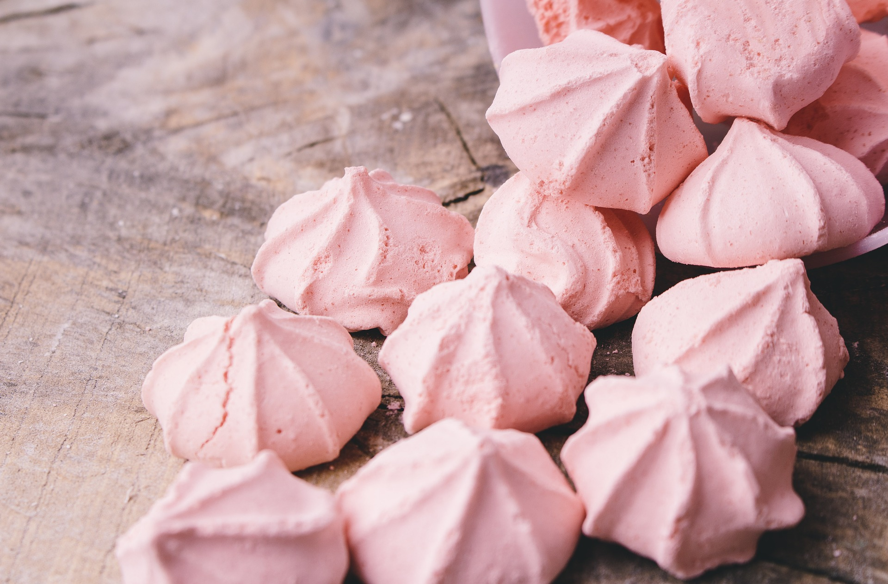

Marengit

Suloiset marengit sopivat sellaisenaan syötäviksi, koristeiksi tai jopa kakkujen tai leivonnaisten pohjiksi. Niiden ulkonäköä voi muokata käyttötarkoitukseen sopivaksi värejä, muotoja ja koristeita vaihdellen.
Raaka-aineet (24 pientä marenkia)
- 2 valkuaista
- 1 dl sokeria
- väriainetta (jauhe tai pasta)
- (nonparelleja koristeluun)
Valmistus
- Vaahdota huoneenlämpöisiä valkuaisia sekä puolet sokerista vaahdoksi.
- Lisää loput sokerista pikkuhiljaa ja jatka samalla vaahdottamista.
- Lisää varovasti väriainetta kunnes sävy on sopiva.
- Marenki on valmista kun sokerikiteet ovat liuenneet ja vaahto on niin kovaa että voit kipata kulhon ylösalaisin ja marenki pysyy sisällä.
- Pursota tai nostele lusikalla kekoja pellille leivinpaperin päälle ja lisää mahdolliset koristeet.
- Paista 100 asteisessa uunissa n. 1-2h. Mikäli teet isompia marenkeja tai pohjia, paistoaika voi olla pitempi. Myös uunien lämpötila voi vaihdella, liian kuumassa uunissa marengit ruskistuvat. Jätä marengit uuniin kuivumaan, laita uuni pois päältä ja jätä luukku raolleen, jotta kosteus haihtuu. Marengit ovat kypsiä kun ne irtoavat helposti leivinpaperista.
Huom! Marenkeja tehdessä on ehdottoman tärkeää, että astiat ja välineet ovat puhtaat ja kuivat! Pienikin määrä rasvaa aiheuttaa sen, että valkuaiset eivät vaahtoudu. Tämän takia keltuaisten erottelussa pitää olla tarkkana, ettei sitä joudu yhtään valkuaisten joukkoon!


